This was a final project for my PR class. The following scenario was given as a test and our job was to come up with an effective PR Plan in order to deal with the crisis. Working within the RPIE or Research, Planning, Implementation, and Evaluation process, I put together the plan and worked through it step-by-step. It shows a response and outcome to a possibly very damaging scenario. The budget is not supposed to reflect accurate figures. All amounts are placeholders.
Pitch Letter
The letter is a sample pitch letter I wrote for an assignment where my client operated a cat cafe out of Austin, TX. I researched blogs, newspapers, local news affiliates, and radio as possible sources to pitch to. Once I had developed a media list I composed the letter with the idea that it would be altered and personalized for each media entity I would reach out to.
This was a project where I headed up a student team that was responsible for redesigning the Capstone Manual for forthcoming Sustainability B.S. Program at Eastern. Our specific task was to design the look of the manual so that it would work well across platforms and in print while being as sustainable as possible. To that end, we stripped all of the styling out of the original and rebuilt it from the ground up. We produced a paper prototype and then moved into our first iteration. Usability testing on the core student demographic who would be using it revealed both strengths and weaknesses which were addressed. Those changes, along with a draft watermark, were implemented to serve both the needs of the clients and the users.
Branding, Logo, Card, and Letterhead
For this project I was tasked with the creation of elements that could be assembled into several different end products. The first step was to create a logo. Utilizing elements of contrast, repetition, alignment, and proximity, I designed a simple logo with Red, White, and Black colors and white space. The impetus for the shape and use of initials was the stamps they used to use in conjunction with sealing wax. The outcome was a design that was distinctive which looks good by itself, decoration for a business card, and as an element of a letterhead.
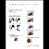
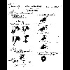
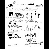
Technical Communication
Comprehensive, Copy Editing, and Proofreading are just a few skills involved with Technical Communication. The manual I was working on was written in broken English, incomplete styling, and poor user design. For the purposes of the project I was tasked with fixing the manual while keeping the look of the original intact. The following shows the notes I made during the process in black and white and the final product in color.
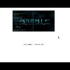
Web Design
Web design utilizing HTML, CSS, and JavaScript goodness.Take a look at my projects on Github.
Grant Writing
I had an opportunity to intern with EWU's department of Engineering and Design during the summer of 2016. For this project I generated documents which included letters of interest, program descriptions, and a budget template. These documents were prepared for plug and play use as new information becomes available after my internship ended.
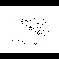
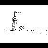
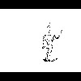
Art
These art pieces were a lot of fun to make. I love pen and ink artwork. These were all projects which I worked on as exercises to better my skills while demonstrating what I could provide to a project. My favorite piece out of this group is the tower and hut. I created this entirely with stippling and was so pleased with the level of detail I was able to achieve.
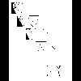
Sequential Communication
Sequential Art is essential for communicating instructions or for telling a story. The first set was a project I worked on which needed to be told without words within 50 cells with representational art. I went through a number of different styles before I settled on a specific look for some of the cells. The next set was a project I worked on with a student team for iFixit in order to supply a repair manual for the Lenovo A8.


 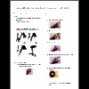
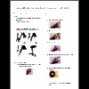
 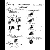
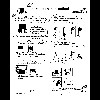
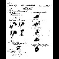
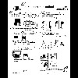


 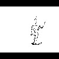
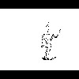


 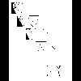
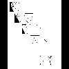